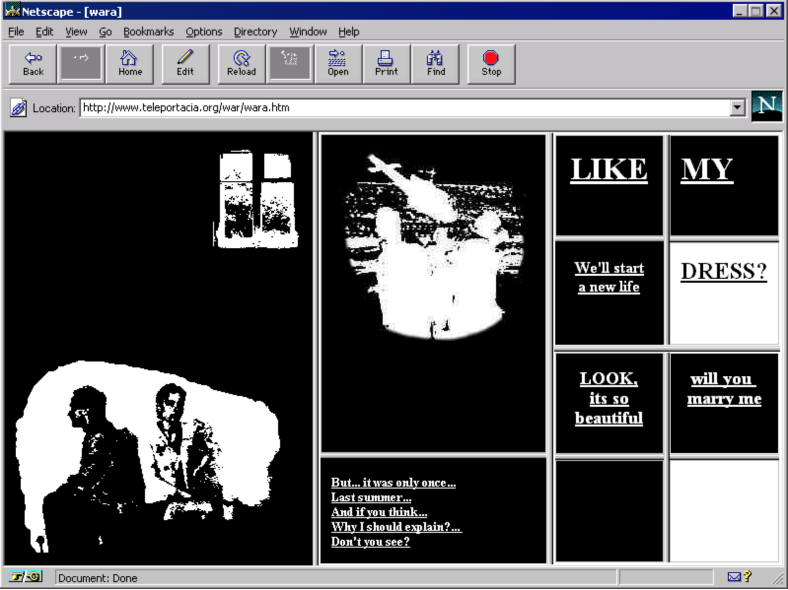

With its use of browser frames, hypertext, and images (both animated and still), My Boyfriend Came Back from the War highlights the parallels and divergences between cinema and the web as artistic and mass mediums, and explores the then-emerging language of the net.
My Boyfriend Came Back From the War doesn't use a lot of complex elements, yet with the simple html elements, Olia managed to convey a lot of hidden strong emotions and feelings through the back and forth with hyperlinks.

This work could still possibly still exist outside of the Internet, in the form of a graphic novel or something similar, yet it would not yield the power it currently have.
The narrative in the artwork isn't exactly clear, yet through the act of clicking and reading from the viewer themselves, the struggle and sense of time comes through clearly.
The vague yet somehow related texts together with the images, animated or not, builds a strong and dark world for the viewers to dive in with each selection.